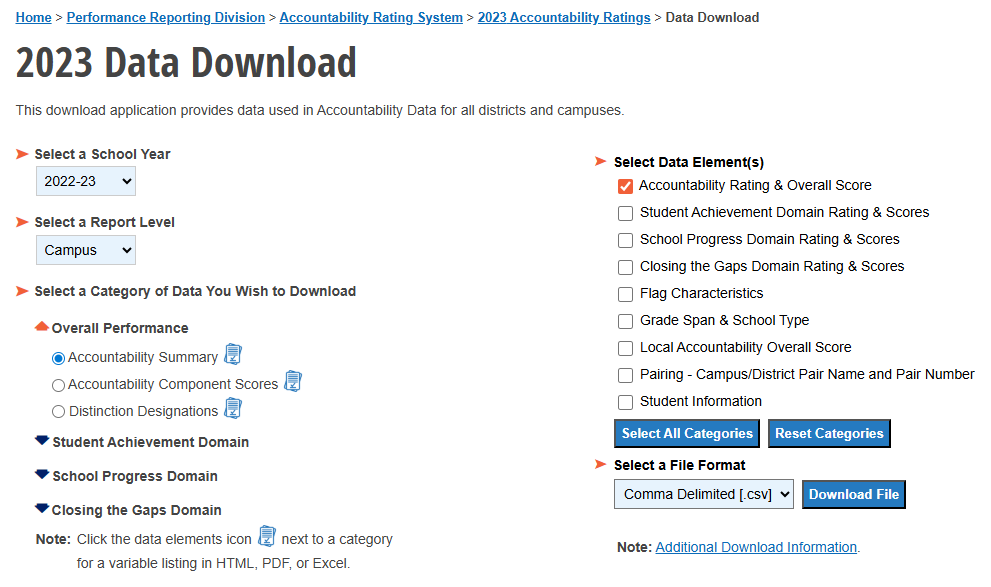
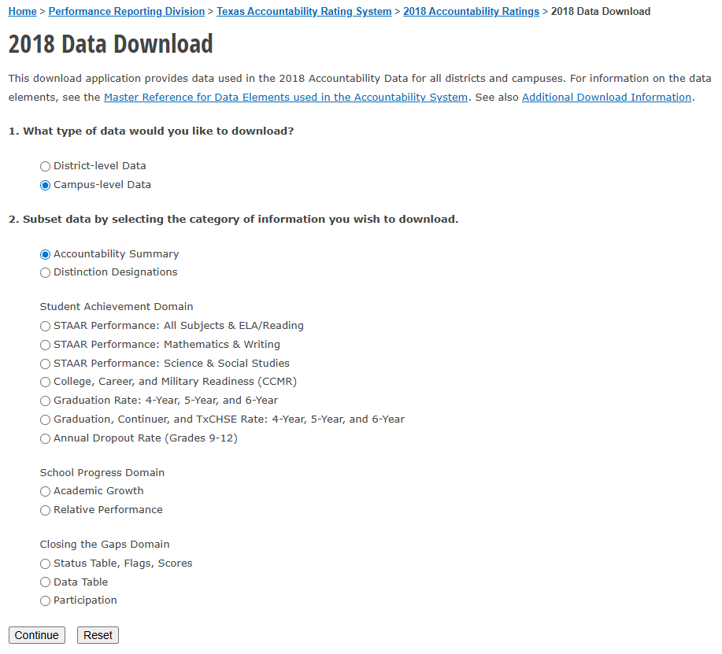

STAAR <- get_table(.table_name = "STAAR",
.database_name = "Dashboard",
.schema = "dbo",
.server_name = "RGVPDRA-DASQL"
) %>%
filter(
## Includes STAAR but not STAAR Alt 2
TestVersion == "S",
## Includes Scored assessments only
ScoreCode == "S",
## Includes Math and English
(SubjectCode == "Math" |
SubjectCode == "Reading" |
SubjectCode == "Algebra I" |
SubjectCode == "English I" |
SubjectCode == "English II"),
## Select desired school years
(SchoolYear == "2024-2025" |
SchoolYear == "2023-2024")
)1 School Performance Data
1.1 Meets STAAR Performance Standards for Math and ELA
The State of Texas Assessments of Academic Readiness (STAAR) assessments are Texas’ annual standardized tests. For the Growth Scorecards, we are using results of all math and English Language Arts (ELA) standard assessments including the STAAR assessments of Reading and Math conducted in grades 3-8 and End-of-Course (EOC) assessments of Algebra I, English I, and English II.
“All STAAR assessments, excluding STAAR Alt 2, have three performance standards: Approaches, Meets, and Masters […] These three performance levels are NOT mutually exclusive, meaning that students that achieve the Masters standard are included in the Meets count and the Approaches count, and students achieving the Meets standard are included in the Approaches count.” (IDEA RAP Team, n.d.)
Percentage of students Meeting performance standards for Math and ELA are calculated at the entity, region, and campus level as:
\[\% \text{ Meeting Standards} = \frac{\# \text{ of Students Meeting in Subject}}{\# \text{ of Students with Scored STAAR or EOC for Subject}}*100\]
1.1.1 Notes & Exclusions
Students may retake a STAAR assessment more than once within the same academic year. For students that had more than one score for the same assessment and academic year, we use the highest-scoring test. Meaning that if they scored in the “Approaches” range at one point and scored in the “Meets” range at another point, they are counted as “Meeting” the performance standards for that subject.
This metric does not include STAAR Alternate 2 tests, which are typically given to students with significant cognitive disabilities, and for which the typical three-level performance standards to not apply.
The data warehouse does not include any STAAR or EOC assessments for students above 5th grade at the Travis campus in Midland ISD (Travis Academy students are included).
- IDEA Travis is a unique partnership between Midland ISD and IDEA Public schools, where the data is technically owned by Midland ISD and shared with IDEA.
1.1.2 Source
The STAAR data includes STAAR and high school level End-of-Course (EOC) assessments stored in IDEA’s data warehouse(IDEA Public Schools Data Warehouse 2025).
1.2 Accountability Ratings
Texas Education Agency (TEA) uses the an accountability rating system to evaluate the academic performance of all Texas public districts, including public school districts and open-enrollment charter schools (Texas Education Agency 2025b). Annual ratings are based on three domains:
- Student Achievement (STAAR, EOC, College, Career, and Military Readiness, graduation rates)
- School Progress (student academic growth, achievement relative to schools with similar economic disadvantage levels)
- Closing the Gaps (progress among students from specific groups, e.g. racial/ethnic groups, special education, Emergent Bilingual or English learner, etc.)
Each district and campus receives an A-F letter grade for each of the three domains and one overall score with associated letter grade. For more information on how specific ratings are calculated by TEA, find the most recent Accountability Rating System manual (Texas Education Agency 2025b).
1.2.1 Percentage of Schools Rated A & B and D & F
For the percentage of schools with specific letter grade accountability ratings, each individual school (Academy, College Prep) has its own rating. The metrics are calculated at the entity and region level as follows: \[{\% \text{ of Schools Rated A or B}} = \frac{(\# \text{ of Schools Rated A}) + (\# \text{ of Schools Rated B})}{\text{Total } \# \text{ of Schools with Rating in Region}}*100\] \[{\% \text{ of Schools Rated D or F}} = \frac{(\# \text{ of Schools Rated D}) + (\# \text{ of Schools Rated F})}{\text{Total } \# \text{ of Schools with Rating in Region}}*100\]
1.2.2 Multi-Year Failure
For the multi-year failure metric, we considered schools with an overall rating <70 to be “failing” and any schools with a failing rating for two subsequent rated years to have experienced a multi-year failure. To be counted as being in multi-year failure for the 2024-2025 school year, a school must have an overall rating score of <70 in the 2024-2025 school year and the 2023-2024 school year.
We calculated the number and percentage of schools in each region multi-year filaure for the 2024-2025 year.
\[{\% \text{ of Schools with Multi-Year Failure}} = \frac{\# \text{ of Schools with Multi-Year Failure}}{\text{Total } \# \text{ of Schools with Rating in Region}}*100\]
Individual schools are marked has having a previous had multi-year failure if the school had a rating <70 for any two or more subsequently rated years prior to 2024-2025.
1.2.2.1 Notes & Exclusions
- No schools received ratings for the 2019-2020 and 2020-2021 school years, because of the COVID-19 pandemic. This metric considers a school to have a multi-year failure if they were below the threshold in 2018-2019 and 2021-2022, because they were below the threshold for two subsequently rated years.
1.2.3 Source
For the each of the school years, accountability ratings were downloaded from the TEA Accountability Ratings page, by selecting the appropriate year and navigating to the relevant Data Download page.
Although the download page structure differs some by year, in each case parameters were set to campus-level report, selecting the accountability summary (Texas Education Agency 2018, 2019, 2022, 2023, 2024, 2025a), as seen in the screenshots below.

For 2022-2023 through 2024-2025, we requested the Accountability Rating and Overall Score data elements, but such download options were not available for the earlier years.

Although the script to call each year varies slightly, each includes a filter to maintain all IDEA TX schools, include any ratings of IDEA Travis schools that are a partnership with Midland ISD. At this time, IDEA Travis schools are considered one school, as “IDEA Travis Academy,” by TEA. If in the future, IDEA Travis schools are separated with TEA records, the filter shown below should hopefully help to retrieve any IDEA Travis schools when applied to the appropriate year.
ratings_25 <- read.csv(
"filepath/2025_Campus_Accountability_Summary.csv",
header = TRUE,
as.is = c("CAMPUS", "DISTRICT", "COUNTY", "REGION"),
colClasses = "character"
) %>%
filter( # Keeps IDEA TX and the Travis Midland schools
DISTRICT == "108807" |
CAMPUS == "165901139" |
CAMPUS == "165901138" |
CAMPUS == "165901137" ) %>%
select(CAMPUS, CAMPNAME, DISTRICT, CDALLS) %>%
rename(
Rating_2024_2025 = CDALLS,
CAMPNAME25 = CAMPNAME) %>%
mutate(Rating_2024_2025 = as.numeric(Rating_2024_2025))